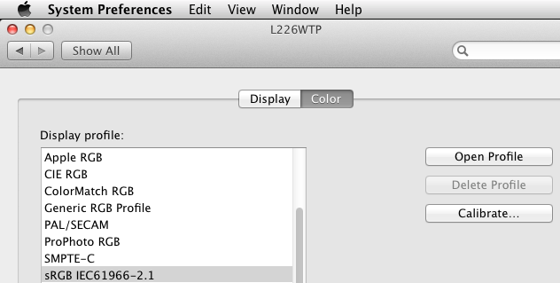
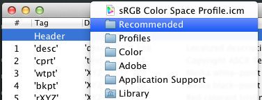
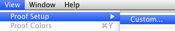
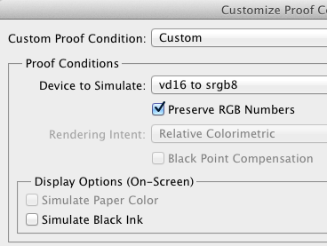
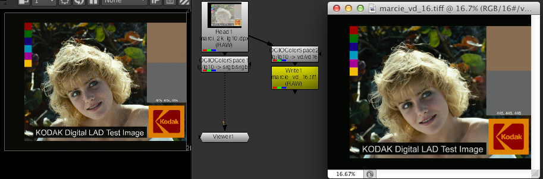

Baking LUT’s¶Sometimes it is necessary to write a color transform as a lookup-table file This is usually because an application does not natively support OCIO (unlike, say, Nuke which various OCIO nodes), but can load a LUT of some kind. This would currently include applications like Autodesk Flame, Adobe Photoshop, SideFX’s MPlay (Houdini’s “Image Viewer”) Remember that baking a LUT is not a perfect solution. Different LUT formats have various limitations. Certain applications might apply LUT’s differently (often incorrectly), and some formats simply cannot accurately represent certain transforms. Others might require carefully selecting shaper spaces and so on. Be sure to carefully test the generated LUT in the target application. Burning the LUT into a test image (such as Marcie!), and carefully comparing to a reference is often the only way to be sure a LUT is correct. Config-based baking¶This section assumes you have a working OCIO config. The config can either be specified by setting the OCIO environment variable: bash$ export OCIO=~/path/to/spi-vfx/config.ocio
Alternatively the config can be specified as a command-line argument to the ociobakelut command, --iconfig ~/path/to/spi-vfx/config.ocio These examples will use the spi-vfx config, specifically the following colorspaces
Remember these are just for the examples - you can of course use any config and any colorspaces Log-input display LUT¶Say we have a lg10 image in MPlay (maybe a ”.cin” film scan), and wish to view it in our main display colorspace, srgb8 The available formats are listed in the ociobakelut --help - for MPlay, we use the “houdini” format (see the FAQ for a more detailed list) So, to create a LUT that transforms from lg10 to srgb8: bash$ ociobakelut --format houdini --inputspace lg10 --outputspace srgb8 log_to_display.lut
We could then load this LUT into MPlay and view a lg10 image correctly! (note that by MPlay tries to linearise ”.cin” files by default, which can be disabled in the preferences, “Convert form 10bit Log”) For most other applications, we could simply change the --format Shaper spaces¶Before we create a LUT to view linear-light images, it’s important to understand shaper-spaces and preluts. The two main types of LUT’s are 1D and 3D. Such LUT formats typically require input values in the 0.0-1.0 range. Such a LUT would be unsuitable for linear-light values input images (where values are often over 1) To address this, various LUT formats contain a smaller “prelut” (or “shaper LUT”) which is applied before the main LUT. This is used to transform the input values into a 0-1 range (typically a linear-to-log type transform) In terms of color-transforms, the prelut transforms from “input-space” to “shaper-space”, then the main LUT transforms from “shaper-space” to “output-space” Some formats do not support such a shaper LUT - these are typically used in applications which do not work with floating-point images (e.g Lustre often works with 10-bit integer DPX’s, so it’s natively supported “–format lustre” (3DL) format has no need for a prelut) Linear-light input display LUT¶With shaper-spaces explained, lets say we have a lnf linear light image in MPlay, and wish to view it in the srgb8 colorspace. To create this LUT accurately, without clipping, we will use the LUT’s prelut to transform from lnf to lg10, then the 3D LUT will transform from lg10 to srgb8 Sounds complicated, but the command is almost the same as before, just with the --shaperspace argument (and --inputspace changed, of course): bash$ ociobakelut --format houdini --inputspace lnf --shaperspace lg10 --outputspace srgb8 lin_to_display.lut
Allocation-based prelut¶If your allocation variables are setup correctly, you can omit the --shaperspace argument, and a prelut will be automatically created based on the allocation vars (see the linked page for more information) Since the colorspaces in the config we are using (spi-vfx) have their allocation variables set correctly, we could simplify the lnf to srgb8 bake command: bash$ ociobakelut --format houdini --inputspace lnf --outputspace srgb8 lin_to_display_allocbased.lut
This command creates a very different prelut to the explicitly specified --shaperspace lg10 in the previous example. Explicitly specifying a shaper can produce better results, however the allocation-based prelut usually works nicely, and is convinient Note that allocation-var based preluts is baker-format dependant, and not all formats currently implement them Config-free baking¶You can perform baking without using a OCIO config. This means you don’t have to create a temporary config just to, say, convert from one LUT format to another. Converting between formats¶Say we have a houdini LUT named log_to_display.lut. To convert this to a Flame compatible 3dl file, simply run: ociobakelut --format flame --lut log_to_display.lut for_flame.3dl
Reversing a 1D LUT¶You can apply a LUT in reverse, and write this to a new LUT (this does not work for 3D LUT’s, but will for 1D LUT’s): bash$ ociobakelut --format flame --invlut logtosrgb.3dl srgbtolog.3dl
Creating a grade LUT¶You can create a LUT which applies CDL-compliant grades: ociobakelut --format cinespace --slope 1.2 1.0 0.9 mygrade.csp
Combining options¶These options can be used together, or used multiple times. For example, to perform a slope offset, then apply “mylut.csp”, saving it out for Lustre: bash$ ociobakelut --format lustre --slope 2.0 1.5 0.4 --lut mylut.csp output.3dl
ICC profiles (Photoshop)¶Photoshop is very focused around print and graphic-design, industries with very different color management concerns to modern feature-film VFX. As such, it can be a pain to integrate. The main issue is current versions of Photoshop (CS5) are only practical for working with 16-bit integer images (not floating point/linear-light images as is common in compositing software) The second issue is there is no simple way to load a simple 1D or 3D LUT into Photoshop (and its API does not make this easy either!) A working space¶First, we need to decide on a colorspace to use for the images in Photoshop. This is the colorspace in which matte-paintings will be performed (likely a different colorspace that used for texture-painting, as these have different requirements) The working space should be a “0-1 colorspace”, reversable, and for matte-paintings ideally allow painting values over “diffuse white” (in other words, to paint values over 1.0 when converted to linear-light in comp) This is a facility-dependant workflow choice. For this example we will use the vd16 colorspace, as described by the spi-vfx Creating display LUT¶“Proofing profiles” in Photoshop can be used in a very similar way to a display LUT in applications like Nuke. This proof-profile can be used to apply a 3D color transform from the working-space to a display space (e.g transform from vd16 to srgb8 in the spi-vfx config) These proofing-profiles are ICC profiles - a rather print-specific technology and relatively complex format Luckily, ociobakelut can be used to create these... but, first, there are some important considerations: It is important to match the --displayicc option to the profile used for the display. Secondly, Photoshop has a lot of print-focused color-management options, some of which can cause problems. Determine display ICC¶On OS X, launch “System Preferences”, open “Displays” and click “Color” tab. The currently active ICC profile is selected. If you just want something simple that “probably matches” a Linux machine, say, it is easiest to uncheck “Show profiles for this display only” and select the “sRGB IEC61966-2.1” profile. You can skip the rest of this section in this case.

However, if you have a specific display-profile selected (maybe created by monitor-calibration software), you should do the following: Click “Open Profile”, and right-click the icon in the top of the window, and click the folder:

This reveals the current profile in Finder. You can drag the file onto a Terminal.app window to get the full path (or, type it manually) Create the ICC profile¶Almost done now. We can write the ICC profile! The full command is, using our example colorspaces of vd16 and srgb8: bash$ ociobakelut --format icc --inputspace vd16 --outputspace srgb8 --displayicc /path/to/my/monitorprofile.icc --description "vd16 to srgb8"
The first three options are the same as any other LUT: bash$ ociobakelut --format icc --inputspace vd16 --outputspace srgb8 [...]
Then we specify the display ICC profile: [...] --displayicc /path/to/my/monitorprofile.icc [...]
We can set the description (shown in Photoshop), and as the last argument, specify: [...] --description "vd16 to srgb8" [...]
Finally an argument for the output file:
If you selected the “sRGB IEC61966-2.1” display profile, you can omit the --displayicc argument (it defaults to an standard sRGB profile): bash$ ociobakelut --format icc --inputspace vd16 --outputspace srgb8 --description "vd16 to srgb8"
Loading the “display LUT”¶Last step is to load the ICC profile into Photoshop, and enable it. On OS X, these can be put into: /Library/ColorSync/Profiles/
(or the equivelant directory in your home-directory) On Windows, right-click the profile and select “Install profile” Then on either platform, click “View > Proof Setup > Custom...”

Select your profile from the “Device to simulate” dropdown (the name is what you supplied with --description):

As pictured, selecting “Preserve RGB numbers”, and deselecting “Simulate Black Ink” is a good starting point (see the next section on “Other color settings”) Finally, you can load an image in your working space, and click “View > Proof Colors”, or hit cmd+y (or ctrl+y) When active, the profile name is shown in the window title (e.g ”.... (RGB/16#/vd16 to srgb8”, where the part after the “#/” is the profile name, “RGB/16” indicates the current image mode) Other color settings¶(note this guide is based on Photoshop CS5, and written while checking the OS X version, although most of these apply similarly on Windows 7) It is usually possible to get a matte-painting to look identical in Photoshop as it does in a more VFX-friendly application such as Nuke. However, as mentioned Photoshop has a lot of color-management related options, many of which can impair the match between it and other applications. The operating system also has some controls (as seen before with the ColorSync display profile) The settings that require tweaking have a tendency to change with OS versions, Photoshop versions and the phase of the moon. The only way to be sure is to compare Photoshop side-by-side with a LUT-reference-image (ideally toggling between Photoshop and Nuke):

The most improtant settings are in the “View > Proof Setup > Custom ...” menu. The recommended “Preserve RGB” setting works sometimes. Other times disabling “Preserve RGB Numbers” and selecting “Rendering Intent: Relative Colorimetric” can be closer. It is safest to not assign a profile to the images you are working on - this is done by clicking “Edit > Assign Profile”, and selecting “Don’t Color Manage This Document”. In closing, of course none of this matters if you don’t have a calibrated monitor! |